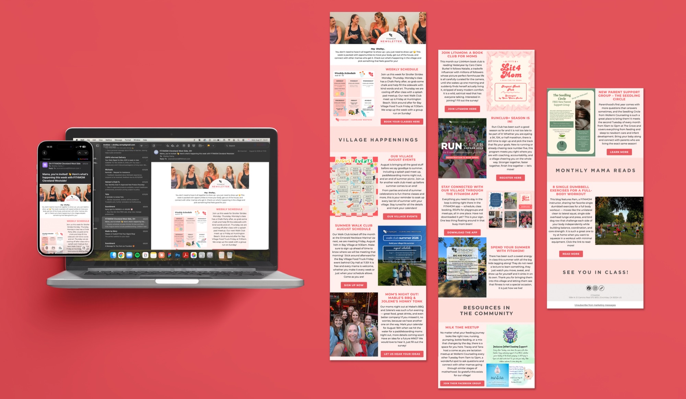
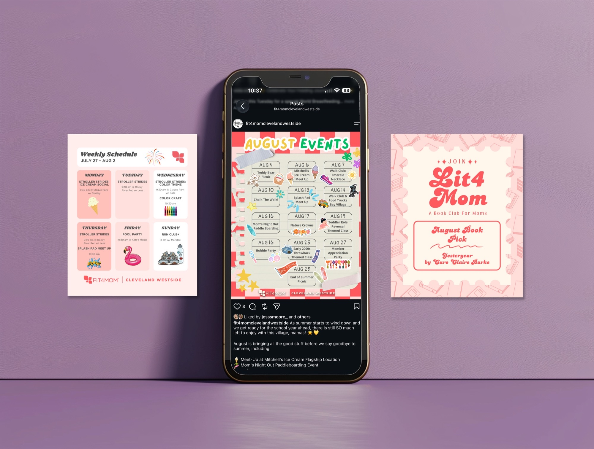
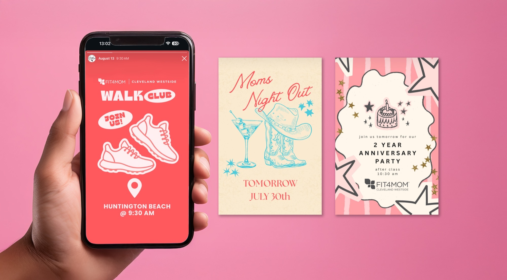

Digital Content Design
Social Media Design · Email Design · Content Creation
As the Social Media and Content Coordinator for Fit4Mom Cleveland Westside I create content that captures everything the brand is about: bright, fun, and inviting. From promotional graphics and class announcements to community spotlights and event coverage, every piece of content is designed to feel welcoming and energetic while staying true to the Fit4Mom brand. I also design their email campaigns, carrying that same consistent look and feel from the feed into the inbox so every touchpoint feels like it came from the same place. This is where I get to flex my graphic design skills in a fast paced, real world setting, consistently creating content that resonates with a community of moms who show up for themselves and each other every single day.


